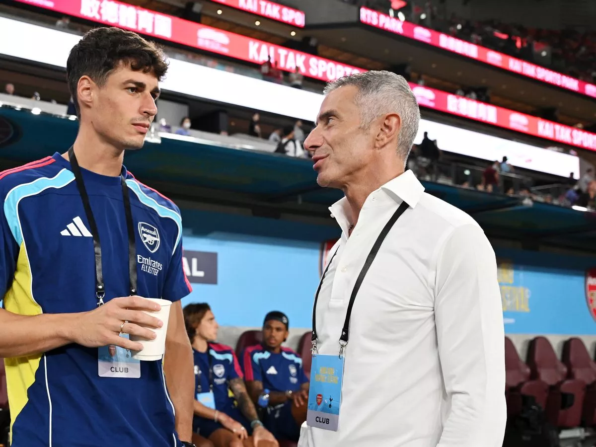

Andrea Berta – The Strategist
Unlike many football directors, Andrea Berta never had a professional
playing career. He began in banking at the Mairano branch of BCC di
Pompiano before moving into football administration. His journey started
in 1999 at amateur club Carpenedolo, where he was hired purely for his
deep football knowledge at age 27.
Known as a “football nerd,” shy and humble, Berta focuses on strategy,
scouting, and club building. His story proves that one can reach the
top of football not by playing but through intelligence and vision.
Andrea Berta has made an immediate impact since joining Arsenal as Sporting Director,
transforming the squad with a bold and data-driven transfer strategy. In his first
transfer window, he oversaw a £267 million investment in seven new players,
including high-profile signings such as Eberechi Eze, Viktor Gyökeres, Martin Zubimendi,
and Noni Madueke. This decisive approach has been praised as one of the most
ambitious squad overhauls in recent Premier League history.

Premier League & UEFA Competitions
The Premier League is one of the toughest domestic leagues in the world,
while UEFA competitions such as the Champions League bring together the
best clubs across Europe. Arsenal and Liverpool both use these platforms
to showcase their tactical approaches and international ambitions.
Whether it’s Arsenal’s pursuit of returning to the top or Liverpool’s
dominance in European football, both clubs remind us why football is
the most beloved game worldwide.